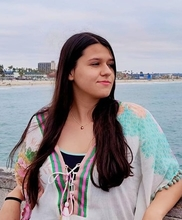

I am Sanja Simonovikj and I am currently pursuing my Master of Engineering (MEng) degree in Computer Science and Engineering with a concentration in AI at MIT with the class of 2021. I graduated with a Bachelor's of Science in Computer Science and Engineering at MIT with the class of 2020.
My coursework and projects have a focus on Machine Learning, Natural Language Processing, Probability, Inference and related.
HackMIT 2020 Hackathon mentor and expo judge
ALFA, CSAIL, MIT Adversarial Optimization in source code
Improbable AI, CSAIL, MIT Theoretical research to understand and combat bias in datasets through having diverse hypotheses
IBM Research Visual Machine Commonsense Reasoning
HackMIT 2019 Overall hackathon winner - project LabelLearn, smart data labeling tool
MIT IBM AI week Representation Learning for Code Malware
Qualcomm Inc Automatic triage of build and test failures
ALFA, CSAIL, MIT Development of tree-structured models for malware detection
Shell Technology Center Bangalore Text Summarization framework for strategy teams
MIT EECS Department Course Lab Assistant for a Machine Leanring course
Base Operations Developing RESTful APIs in a startup environment
Black Labs Chatbot development
MIT SAT Academic Teaching Initiative Advanced Math SAT prep teacher
Macedonian Math National Olympiad Gold medal winner
International Mathematical Olympiad 2016 (IMO) Honourable mention winner
Yahya Kemal College Valedictorian
Macedonian Math National Olympiad Silver medal winner
International Mathematical Olympiad 2015 (IMO) Certificate of participation